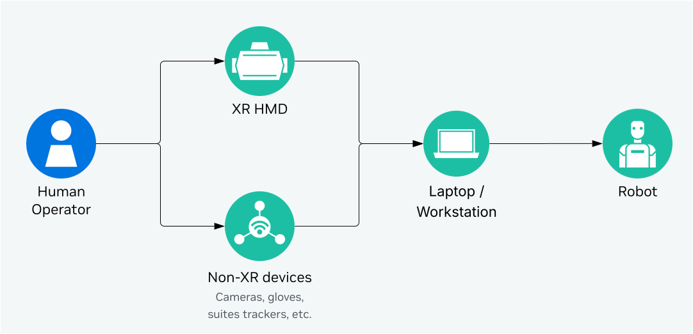
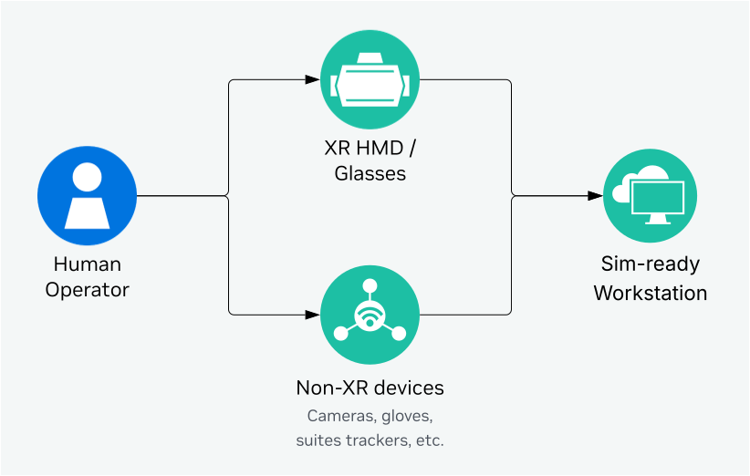
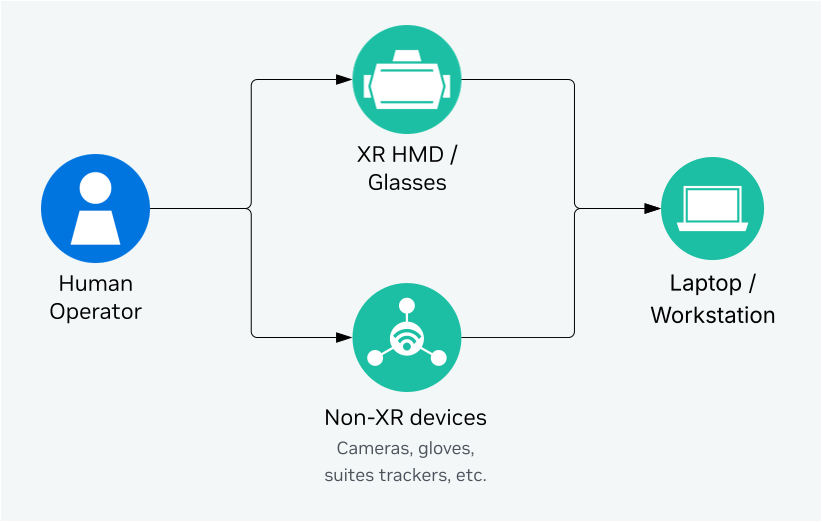

System Requirements#
Isaac Teleop can be used for teleoperation of robots, data collection, and human-centric data collection. The hardware & software requirements are different for each use case.
Teleoperation to Robots with Input Devices#
{kind=link}

When using extra input devices (such as Manus Gloves, Logitech Rudder Pedals, OAK-D Camera, etc.), Isaac Teleop needs to be run on a laptop or workstation, that is connected to the robot via network. The minimum requirements for the laptop/workstation are:
Component |
Requirement |
|---|---|
CPU / GPU |
x86_64 [1], NVIDIA GPU required |
OS |
Ubuntu 22.04 or 24.04 |
Python |
3.10 / 3.11 / 3.12 |
CUDA |
12.8 or newer |
NVIDIA Driver |
580.95.05 or newer |
Teleoperation with Isaac Sim and Isaac Lab#
{kind=link}

For running simulation with Isaac Sim and Isaac Lab with RTX rendering, the CloudXR server and Isaac Teleop sessions need to be run on the same workstation with Isaac Sim and Isaac Lab. The workstation’s system requirements are driven by Isaac Sim and Isaac Lab [2].
The recommended workstation configuration for Sim-based Teleop is:
Component |
Requirement |
|---|---|
CPU |
AMD Ryzen Threadripper 7960x |
GPU |
1x RTX 6000 Pro (Blackwell) or 2x RTX 6000 (Ada) |
OS |
Ubuntu 22.04 [3] |
Python |
3.12 [3] |
CUDA |
12.8 or newer |
NVIDIA Driver |
580.95.05 or newer |
If you are only using XR headsets for teleoperation, you can host the workstation in the cloud. See Isaac Lab Cloud Deployment for more details.
Human-centric Data Collection#
Isaac Teleop can also be used for human-centric data collection without a robot or simulator in the loop. In this case, Isaac Teleop needs to be run on a laptop or workstation, that is connected to device peripherals. The minimum requirements for the laptop/workstation are:
{kind=link}

Component |
Requirement |
|---|---|
CPU / GPU |
x86_64 [1], NVIDIA GPU required |
OS |
Ubuntu 22.04 or 24.04 |
Python |
3.10 / 3.11 / 3.12 |
CUDA |
12.8 or newer |
NVIDIA Driver |
580.95.05 or newer |
Footnotes